网络层¶
网络层服务¶
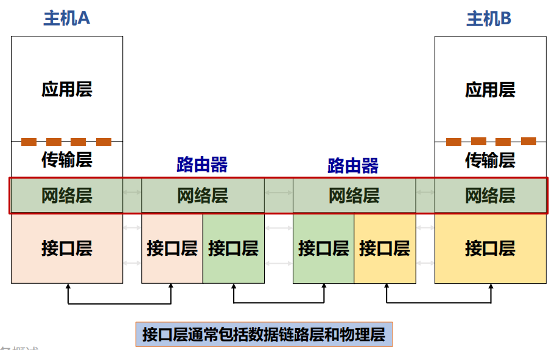
- 网络层实现端系统间多跳传输可达
- 路由器：检查数据包首部，转发数据包
- 关键功能：
- 路由（控制面）：选择路径（路由算法与协议）
- 转发（数据面）：选择当前包在当前路由器的输出接口
- 提供给传输层的服务：无连接的数据报服务、面向连接的虚电路服务
无连接的数据报服务¶
发送分组时不需要先建立连接
- 每个分组独立发送，独立携带寻址信息。
- 同一对主机之间的数据包，可能经过不同路径。
尽力而为：网络层不提供服务质量的承诺，不可靠，可能出现丢包、乱序、错误
优点：网络的造价大大降低，运行方式灵活，能够适应多种应用
数据报转发策略：基于分组的目的地址
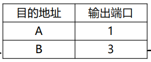
面向连接的虚电路服务¶
先建立连接（请求分组->原路返回确认分组），再通信，最后释放连接。
- 建立时，沿途路由器保存该连接的转发状态
- 之后，属于该连接的数据包按照这些状态转发。
- 但虚电路是一条逻辑连接，并不意味着独占一根物理线路。
- 面向连接本身不等于绝对可靠。 链路或设备失效，仍然可能导致通信中断，然后可能导致所有数据丢失。
虚电路的转发策略：基于分组标签，即虚电路号
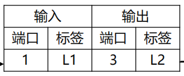
意思是：从端口 1 收到标签 L1 的包，就把标签改成 L2，从端口 3 发出。
虚电路与数据报的比较¶
| 比较内容 | 虚电路 | 数据报 |
|---|---|---|
| 发送前建立连接 | 需要 | 不需要 |
| 转发依据 | 已建立的标签映射 | 目的地址等转发信息 |
| 网络中的状态 | 保存各虚电路状态 | 基本模型不保存逐连接的虚电路状态 |
| 路径 | 按建立的路径转发 | 分组独立转发，路径可能不同 |
| 顺序 | 课件模型中保持顺序 | 可能乱序 |
| 故障影响 | 相关虚电路可能中断 | 在途包可能丢失，后续可随路由更新改道 |
性能¶
- 恒定流量：带宽不浪费，刚好满足要求
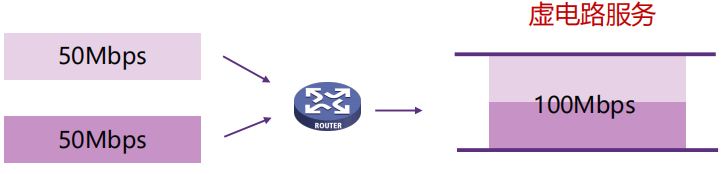
-
突发流量：每个数据源的峰值为 70 Mbps，却只能获得 50 Mbps
-
虚电路（固定份额）若缓冲不足，就会丢包
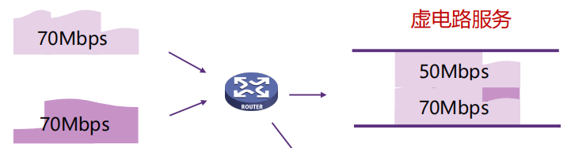
-
数据报：（统计复用：用户不总是同时活跃，因此可以共享总容量）
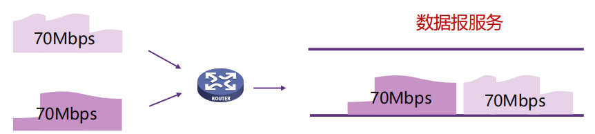
效率¶
忽略源端首次发送时延、传播时延和拥塞排队，考虑三个转接节点：
其中：
- \(S\)：建立虚电路所需时间。
- \(D\)：每个节点的转接处理时延。
- \(B\)：传输速率，单位 bit/s。
- \(P+H\)：实际发送的分组总位数（长度+开销）。
Internet 网际协议¶
IPv4 协议（无连接的协议）¶
数据报格式：首部+数据¶
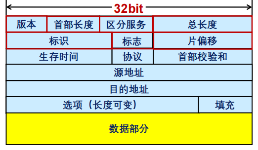
| 字段 | 长度 | 作用 |
|---|---|---|
| 版本 | 4 bit | IPv4 的值为 4 |
| 首部长度 IHL | 4 bit | 表示首部有多少个 4 字节 |
| 区分服务字段 | 8 bit | 一般情况下不使用（承载 DSCP、ECN 等信息） |
| 总长度 | 16 bit | 整个 IP 数据报的字节数 |
| 标识 | 16 bit | IP软件通过计数器自动产生，每产生1个数据报计数器加1；在ip分片以后，用来标识同一片分片 |
| 标志 | 3 bit | 控制和说明分片情况（目前只有两位有意义） MF，置1表示后面还有分片，置0表示这是数据报片的最后1个 DF，不能分片标志，置0时表示允许分片 |
| 片偏移 | 13 bit | 分片数据在原始数据中的位置 |
| TTL | 8 bit | 限制数据包的转发寿命 |
| 协议 | 8 bit | 标识上层协议（TCP/UDP/ICMP…） |
| 首部校验和 | 16 bit | 检测 IPv4 首部差错 |
| 源地址和目的地址 | 32 bit | 源 IPv4 地址 |
| 目的地址 | 32 bit | 目的 IPv4 地址 |
| 选项与填充 | 可变 | 提供扩展功能并使首部对齐 |
数据报分片¶
为什么需要分片：不同链路能承载的包大小可能不同
MTU 是该链路允许承载的最大网络层数据包大小。
路径 MTU （Path MTU）则是整条路径上最小的链路 MTU。
Note
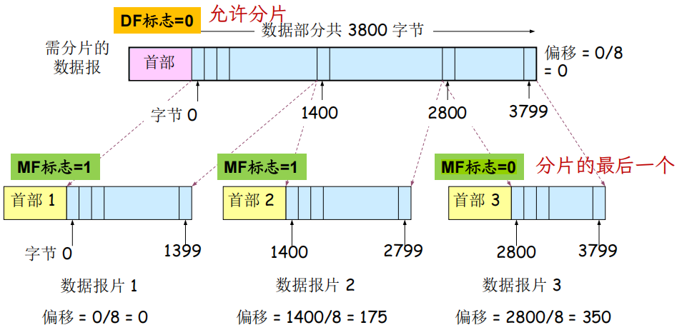
片偏移：表示该片数据在原始数据部分中的起点-
- 不是相对 IP 首部，也不是相对上一个分片
- 再次分片时，偏移仍相对于最初的原始数据计算
- 偏移的单位是8字节
分片：IPv4 可以由源主机分片，也可以在允许的情况下由途中路由器分片；已经产生的分片还可能再次被分片
重组：IPv4 最终重组由目的主机完成
- 重组依靠标识、标志、偏移、MF、长度，以及源地址、目的地址、协议等信息
- 收到 MF=0 的最后一片，不代表一定已经收齐，中间仍可能缺片
IP地址¶
全球唯一的32位的标识符
结构：网络前缀+主机号
分类：A、B、C、D、E五类，A类、B类、C类为单播地址
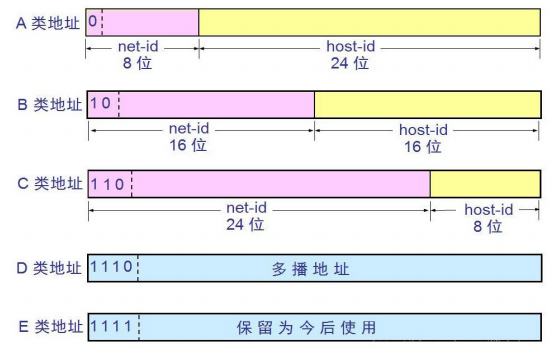
Note
10.2.1.1：A 类。
128.63.2.100：B 类。
201.222.5.64：C 类。
256.241.201.10：非法，256 超过单字节范围。
特殊地址：
地址或形式 含义 主机位全 0 普通子网中的网络地址 主机位全 1 普通子网中的定向广播地址 127.0.0.0 本地节点（一般为 127.0.0.1） 全 0 网络地址 只在系统启动时有效，用于启动时临时通信，又叫主机地址 0.0.0.0 指任意地址 255.255.255.255 本地链路有限广播
子网划分¶
两级IP地址：网络号+主机号 ----> 三级IP地址：网络号+子网号+主机号
子网掩码(subnet mask )：32 bit，置1表示网络位，置0表示主机位
Note
Example: 172.16.2.160，掩码 255.255.255.192
Answer: 网络地址 = IP地址 AND 子网掩码，则主机位 6 bits
- 主机位全0，子网地址172.16.2.128
- 主机位全1，广播地址172.16.2.191
- 主机数：[ 2^6-2=\boxed{62} ]
CIDR 无类域间路由¶
使用可变长度网络前缀描述地址块：网络地址/前缀长度
Note
Example 1：地址拆分
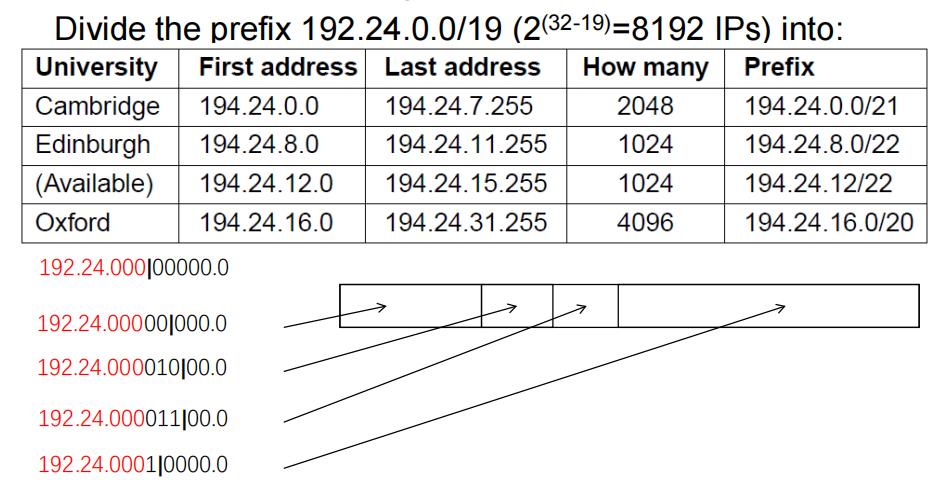
Example 2：从 202.101.0.0 开始，依次为 A、B、C、D、E 分配 1024、2000、2000、4096、512 个地址，要求包含特殊地址。
A 202.101.0.0/22 202.101.0.0—202.101.3.255 B 202.101.8.0/21 202.101.8.0—202.101.15.255 C 202.101.16.0/21 202.101.16.0—202.101.23.255 D 202.101.32.0/20 202.101.32.0—202.101.47.255 E 202.101.4.0/23 202.101.4.0—202.101.5.255
路由聚合：把多个合适的小地址块，用一个更大的公共前缀表示
192.168.0.0/24、192.168.1.0/24可以聚合为：192.168.0.0/23
最长前缀匹配：同一目的地址可能同时匹配多条路由，选择其中前缀位数最多的一条
Note
前缀 接口 2.128.0.0/9 1 2.192.0.0/10 2 2.0.0.0/8 3 2.2.3.0/24 4 0.0.0.0/0 5
- 2.5.1.2：匹配 /8，不在更具体的几个范围中 → 接口 3。
- 2.200.1.2：匹配 /8、/9、/10，最长是 /10 → 接口 2。
- 2.150.1.2：匹配 /8 和 /9，最长是 /9 → 接口 1。
- 3.150.1.2：不匹配上述以 2 开头的前缀 → 默认路由 接口 5。
DHCP 动态主机配置协议¶
IPv4 地址的获取：
- 静态设定：申请固定IP地址，手工设定，如路由器、服务器
- 动态获取：使用DHCP协议或其他动态配置协议
当主机加入IP网络，允许主机从DHCP服务器动态获取IP地址
优点：可以有效利用IP地址，方便移动主机的地址获取
工作模式：客服/服务器模式（ C/S ）；基于 UDP 工作，服务器运行在 67 号端口， 客户端运行在 68 号端口
| 阶段 | 报文 | 含义 | 传输形式 | 目标IP | 源IP |
|---|---|---|---|---|---|
| Discover | DHCPDISCOVER | 客户端寻找 DHCP 服务器 | 广播 | 255.255.255.255 | 0.0.0.0 |
| Offer | DHCPOFFER | 服务器提供候选配置 | 广播 | 255.255.255.255 | DHCP服务器或中继路由器的IP地址 |
| Request | DHCPREQUEST | 客户端表明选择并请求配置 | 广播 | 255.255.255.255 | 0.0.0.0 |
| ACK | DHCPACK | 服务器确认配置 | 广播 | 255.255.255.255 | DHCP服务器或中继路由器的IP地址 |
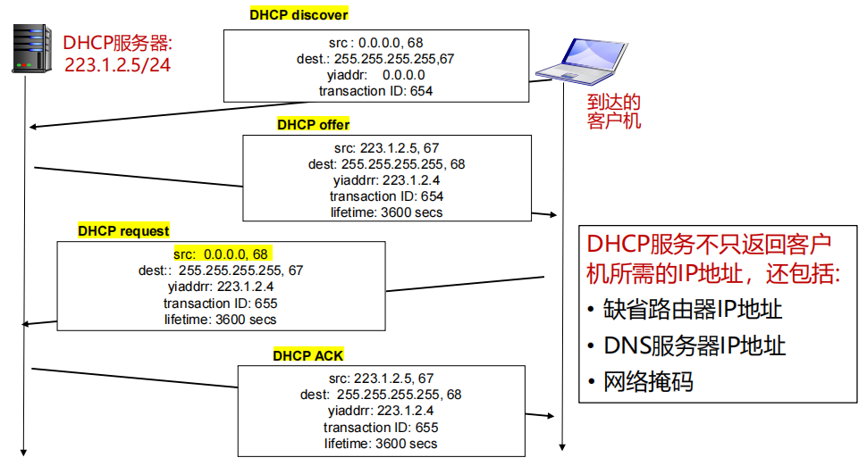
IP与MAC地址：最终目的地由 IP 地址表达，当前这一跳交给谁由链路层地址表达
- IP 地址放在 IP 数据报的首部，而硬件地址则放在 MAC 帧的首部
- IP数据报经过不同链路时，IP 数据报中封装的IP地址不发生改变，而Mac帧中的硬件地址是发生改变的
ARP 地址解析协议¶
根据目标 IPv4 地址，获取同一链路上对应接口的 MAC 地址。
A 想给 B 发送数据，但只知道 B 的 IP 地址
- A 查询本地 ARP 缓存。
- 若已有映射，直接使用。
- 若没有，广播 ARP 请求。
- B 收到请求，发现询问的是自己，通常单播回复，发送 MAC 地址给 A
- A 缓存映射，再发送数据。
如果 A 和 B 不在同一个局域网中：A 不会解析远端 B 的 MAC 地址，而是解析下一跳网关的 MAC 地址。
NAT 网络地址转换¶
用于解决IPv4地址不足的问题，是一种将私有（保留）地址转化为公有IP地址的转换技术
- 转换的不只是 IP 地址，还包括端口号
- NAT转换表：每个 (源IP地址, port #) 到 (NAT IP地址, 新port #) 映射项
- 优势：保护局域网的私密性；节省合法地址
- 缺点：违反了端到端的原则；违反了最基本的协议分层规则
- NAT Traversal Problem：局域网中有一台服务器，外部客户端想主动连接这台服务器
- 中继 relaying：内网服务器主动连接中继服务器，外部客户端也连接中继服务器，中继服务器在两者之间转发数据。
ICMP Internet 控制报文协议¶
ICMP 允许主机或路由器报告差错情况和提供有关异常情况的报告
-
ICMP 报文携带在IP 数据报中
-
报文类型：差错报告报文、询问报文
-
报文格式：前 4 个字节包含格式统一的三个字段：类型、代码、检验和；相邻的后四个字节内容与ICMP的报文类型有关
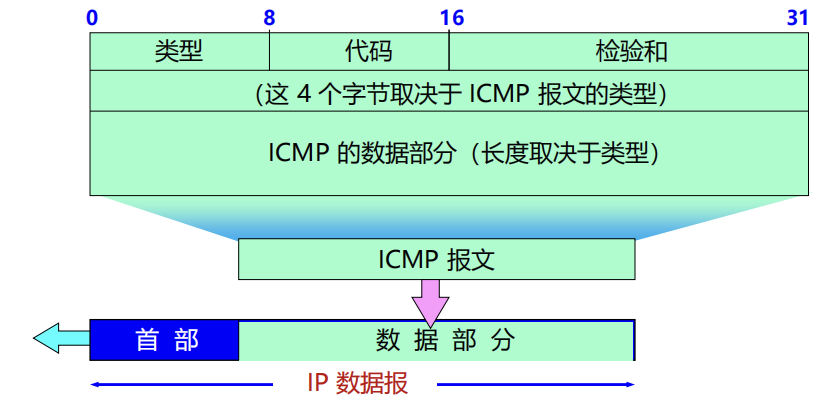
-
PING 用来测试两个主机之间的连通性
-
使用了 ICMP 回送请求与回送回答报文 Echo Request / Echo Reply
-
可以得到的信息：连通性、往返时延、单向转发跳数TTL
能否根据返回 TTL 猜测远端主机操作系统？
思路是不同系统常使用不同的初始 TTL，比如常见初始值可能是 64、128、255，然后结合路径跳数反推。
-
TraceRT 得到整个路径上路由器的地址
-
原理：逐渐增大 TTL：
Text Only 路由器返回的 ICMP 报文源 IP，就是该跳路由器地址。
-
停止条件：最终到达目的主机后，由于 UDP 使用不存在的端口，目的主机返回 Type 3, Code 3；源收到
3/3后停止跟踪
路由算法¶
路由算法要解决的是：一个数据包从当前路由器到目标节点，应该走哪条路？
路由算法应该满足的性质：正确性、简单性、鲁棒性、稳定性、公平性、有效性
按照是否会根据网络状态变化自动调整，分为：
- 静态路由：不自适应
- 动态路由：会根据链路、拓扑、流量变化重新计算
汇集树(Sink Tree)：所有源节点到一个指定目标节点的最优路径集合，构成一棵以该目标节点为根的树。（不是唯一的）
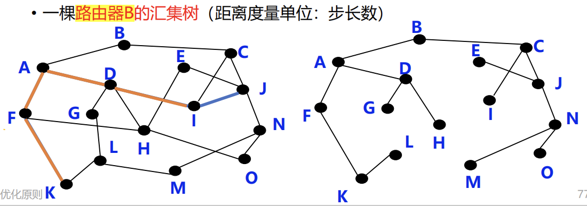
最短路径算法 Dijkstra
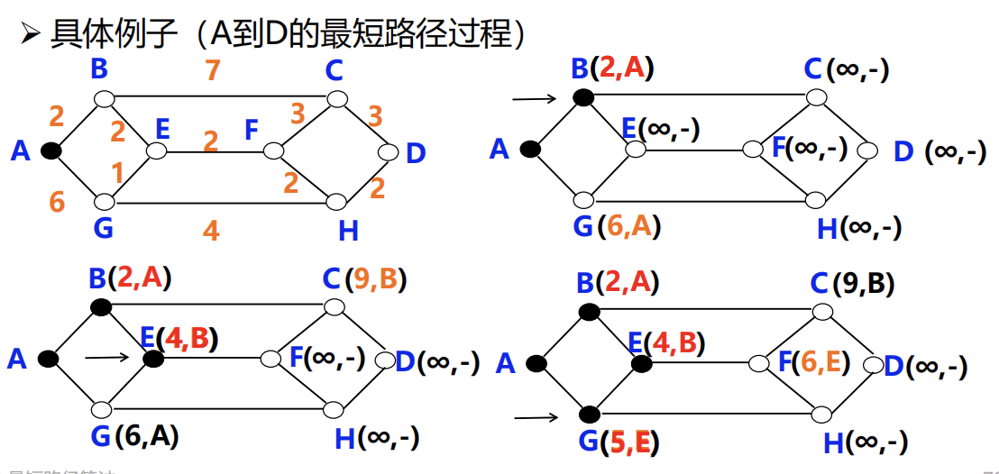
距离向量路由 DV¶
每个路由器不知道完整网络拓扑
Bellman-Ford 方程：[ \boxed{D_x(y)=\min_m{c(x,m)+D_m(y)}} ]
x 到 y，要么经过邻居1，要么经过邻居2……把每种情况都算出来，取最小值。
基本思想：每个节点周期性地向邻居发送它自己到某些节点的距离向量；当节点 x 接收到来自邻居的新 DV 估计，它使用 B-F 方程更新其自己的 DV
算法特点：迭代的（不是一次算完）、分布式的（没有中央控制器）
缺点：好消息传播快，坏消息传播慢
A -- B -- C：B 到 A 的链路断开后：C 仍认为可以通过 B 到达 A，B 又错误地认为可以通过 C 到达 A，双方不断增加到 A 的估计距离（Count-to-Infinity）
路由器只知道邻居报告的距离，不知道邻居的路径是否实际上又经过自己，因此可能形成路由环路。
解决方案：毒性逆转 Poisoned Reverse
如果 C 到 A 是通过 B，那么 C 在向 B 报告时，不说：我到A=2，而说：[ \boxed{C\rightarrow A=\infty} ]
不能彻底解决：主要可以防止简单的两节点相互欺骗。但如果出现更长的环路，仍可能出现计数到无穷。
链路状态路由 LS¶
DV：只知道邻居报告的距离。
LS：通过链路状态分组掌握全网拓扑
- 发现邻居
- 设置到每个邻居的成本度量（多种度量）
- 构造链路状态 LS 分组：发送方标识、序列号、年龄、邻居列表
- 将 LS 分组发送给其他路由器（每个LS分组包含一个序列号，且递增，用于判断新旧）
- 使用最短路径算法 Dijkstra 计算路由
LS与DV：LS 全网扩散、自己测量、各自计算，健壮性好、收敛速度快
层次路由¶
为什么前面已经有 Dijkstra / DV / LS，还要层次路由？
因为现实中的 Internet 太大，路由表过于庞大、存储和查找困难、路由信息交换开销高。
地址聚合虽然有帮助，但不够
如果地址连续：PC1、PC2，可以聚合成：PC1-PC2，减少路由表项。但现实中地址分配可能随机，不总能高效聚合；而且不同网络管理员希望自己管理自己的网络。
自治系统 AS：由一个管理机构控制，每个 AS 有唯一 AS ID
- 自治系统内部使用内部网关路由协议 IGP：OSPF，RIP，IS-IS，IGRP，EIGRP…
- 自治系统之间使用外部网关路由协议 EGP：BGP
这些路由协议在路由协议部分详细介绍
广播路由¶
Broadcasting：源主机同时给全部目标地址发送同一个数据包，不同方法：
-
方法一：逐个单播：浪费带宽、必须知道所有目的地址
-
方法二：多目标路由：发一个带多个目标的包，在网络分叉处才复制
-
网络利用率更高，但仍然要知道所有目的地址，难以实现
-
方法三：Flooding 泛洪：收到一个包后，从除了入接口以外的所有接口转发
-
无控制的：环路可能导致广播风暴（大量重复）
-
受控泛洪：
-
序号控制泛洪：每个广播包携带：源S + 序列号n，路由器记录自己见过的，如果记录里已有：丢弃；如果没有：记录，然后继续广播。
-
逆向路径转发：只有当广播数据包从通往源节点的最佳路径对应接口到达时，才继续转发
不能完全避免重复分组（可以减少重复包，但不能保证每个节点只收到一份）
-
-
方法四：生成树：先建立一个：Spanning Tree，然后广播包只沿这棵树传播
-
没有环、没有冗余路径、副本数量少、带宽利用率高
组播路由¶
multicasting：源主机给网络中的一部分目标用户发送数据包
目标：为每个组建立组播转发树、每个成员最好只收到一份、非成员不应该收到、从源到成员的路径尽量最优
步骤
- 确定组成员 IGMP：路由器获悉该网段的组播组成员
- 建立组播树——路由器与路由器之间的协议
- 密集分布，基于源点树：每个发送源建立一棵自己的树
- 路径比较接近源点到各成员的最佳路径
- 但是组播源很多时，路由器需生成多颗棵树，工作量巨大、存储开销很大
- 稀疏分布，基于核心树：多个组播源共享一棵树
- 选择一个核心节点 Core，所有组成员围绕这个核心建立共享树
- 路径可能不是最优
常用组播地址段：224.0.0.0/24
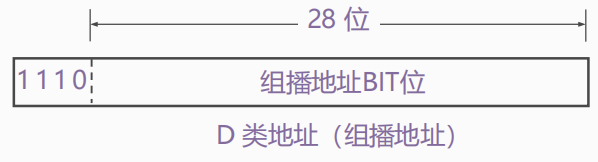
选播路由¶
Anycast：将数据包传送给最近的一个组成员
典型应用 DNS：在没有指定DNS服务器的情况下，用户将始终连接到“最接近”服务器
Internet 路由协议¶
OPSF 内部网关路由协议¶
Open Shortest Path First，开放最短路径优先协议
采用分布式的链路状态算法 LS
LSDB：链路状态数据库
- 每个路由器收到其他路由器的链路状态之后，会建立一个
- 可以理解为当前区域的完整网络拓扑图
Area：OPSF 使用层次结构的区域划分
- 上层的区域叫做主干区域(backbone area)，其他区域都必须与主干区域相连
- 非主干区域之间不允许直接发布区域间路由信息
路由器角色
- 内部路由器 (Internal Router，IR)
- 区域边界路由器 (Area Bounder Router，ABR)
- 自治系统边界路由器(AS Bounder Router, ASBR)
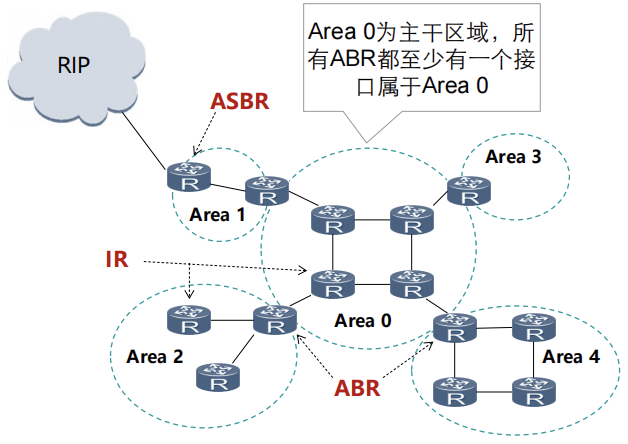
Note
-
为什么 OSPF 适合大型网络？
- OSPF 是链路状态协议，收敛快
- OSPF 支持 Area 分层
-
OSPF 会不会有“坏消息传得慢”的问题？
不会，链路状态变化后，把这个事实洪泛给大家。
RIP 内部网关路由协议¶
路由选择协议RIP（ Routing Information Protocol ）是基于距离矢量算法 DV 的协议
使用跳数衡量到达目的网络的距离：
-
经过的路由器越少，认为路径越好
-
允许一条路径最多只能包含 15 个路由器
在 RIP 中，16 表示不可达，这就是 RIP 不适合大型网络的重要原因之一。
基本思想：仅和相邻路由器交换信息；交换的内容是自己的路由表；周期性更新：30s（交换整个路由表）
RIP 防环机制：触发更新（发生重要变化时立即发送更新）、毒性反转、水平分割
BGP 外部网关路由协议¶
Border Gateway Protocol，边界网关协议（目前互联网中唯一实际运行的自治域间的路由协议）
BGP 的核心不是只找最短，而是在策略约束下选择最优路径
功能
- eBGP：从相邻的 AS 获得网络可达信息
- iBGP： 将网络可达信息传播给 AS 内的路由器
BGP 是路径向量协议（路径经过哪些AS）
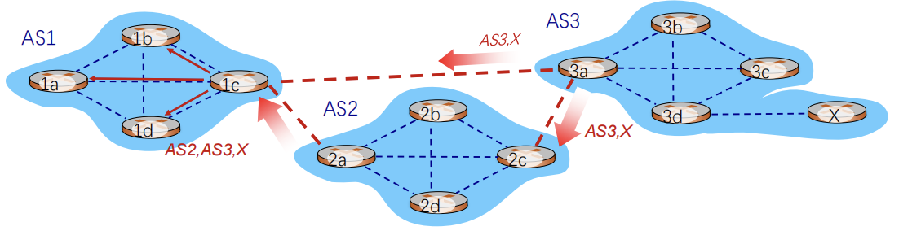
一条路由“route” = prefix（目的网络前缀） + attributes（属性）
图中的 X 表示一个目的网络前缀（network prefix），X 是挂在 AS3 后面的某个网络
两个重要属性
- AS路径（AS-PATH）：IP前缀通过经过的所有AS号，如：AS 67, AS 17
- 下一跳（NEXT-HOP）：说明路由信息对应的下一跳IP地址
路由选择：同一个目标网络可能收到很多条 BGP 路由，需要选择一条最佳路由，选择规则：
- 本地偏好 Local Preference
- 最短 AS-PATH
- 最近的 NEXT-HOP
- 其他标准
- 最低路由器 ID
BGP 报文：BGP通过 TCP 的 179 端口交换报文
- Open 报文：用于建立BGP对等体之间的会话连接，协商BGP参数（该过程需要认证）
- Update 报文：用于在对等体之间交换路由信息
- Keepalive 报文：用于保持BGP会话连接
- Notification 报文：用于差错报告和关闭BGP连接
第一次建立 BGP 时邻居之间交换完整 BGP 路由表；之后只在发生变化时更新变化的部分。
BGP会话: 两个BGP路由器通过TCP连接交换BGP报文
MPLS 多协议标签交换¶
MultiProtocol Label Switching
- 标签交换路由器 LSR：具备标签交换、路由选择两种功能
- MPLS Domain：一组相邻的支持 MPLS 的路由器构成
- 标签分配协议 LDP：用来在LSR之间建立LDP 会话并交换Label/FEC映射信息
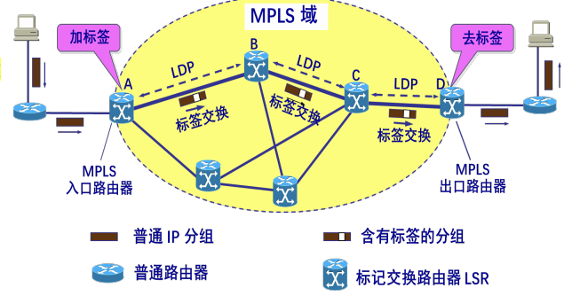
工作过程：
- 加标签：在 MPLS 域的入口处，给每一个 IP 数据报加上标签
- 标签交换：采用硬件技术对加上标记的 IP 数据报进行转发
- 去标签：当分组离开 MPLS 域时，MPLS 出口路由器把分组的标签去除
路由器工作原理¶
分成两个逻辑部分：
-
控制层 Control Plane
-
运行路由协议：可同时运行多个；也可不运行任何路由协议，只使用静态路由和直连路由
-
学习到不同目的网络的路径
-
生成路由表：路由管理根据路由优先级，选择最佳路由，形成核心路由表
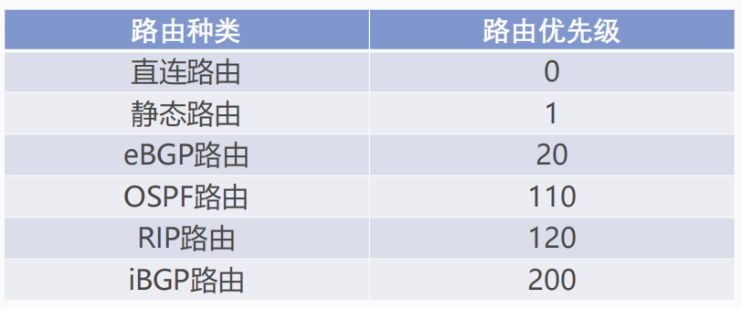
-
控制层将核心路由表下发到数据层，形成转发表（FIB）
-
数据层 Data Plane：根据上述路由表（实际FIB），将收到的IP分组转发到正确的下一跳链路
-
用目的IP地址，基于最长前缀匹配规则查询转发表
- IP报文在路由器转发前后的变化：链路层封装更新，IP头部“TTL”减1，IP头部“校验和”更新
- 普通 IP 报文转发过程中，路由器不查看传输层及以上层协议的内容
数据报在不同硬件单元的处理：报文输入的接口卡(转发表查询) -> 交换结构 -> 报文输出的接口卡（可能排队）
三种典型的交换结构
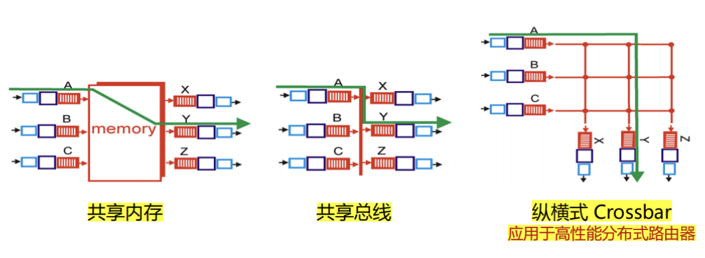
家用路由器与典型网络路由器差异较大
VPN¶
计算机网络按用途分类：专用、公用
专用网络的实现方式：
• 使用专用链路：铺设、租用（费用高，不灵活）
• 使用公共链路：不安全
VPN指利用公用网络架设专用网络的远程访问技术
通过隧道技术在公共网络上模拟出一条点到点的逻辑专线，从而达到安全数据传输的目的
R1 把整个原始数据报当作新的数据部分，然后在外面再加一个新的 IP 首部
内层地址：最终通信双方；外层地址：隧道起点和终点
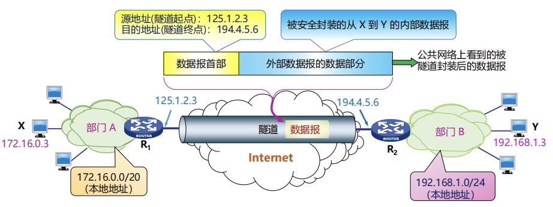
VPN对数据机密性和完整性的保护
- Hash：得到摘要，用于完整性
- 加密：保证机密性
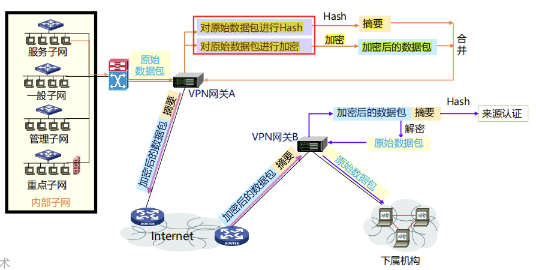
IPv6 协议¶
IPv6 是 IETF 设计的下一代 Internet Protocol，用来替代 IPv4
IPv6 地址：
-
地址长度为 128bit，是IPv4地址长度的4倍
-
表示法，冒分十六进制，
x:x:x:x:x:x:x:x
2001:0DA8:0000:0000:200C:0000:0000:00A5 简化：
每个 x 前面的 0 可省略，可把连续的值为 0 的 x 表示为 “::” , 且 “::” 只能出现 1 次
2001:DA8:0000:0000:200C::A5
IPv6 基本首部：永远是 40 Bytes
- 版本：4bit，协议版本号，值为6
- 流量类型：8bit，区分数据包的服务类别或优先级
- 流标签：20bit，标识同一个数据流的分组
- 有效载荷长度：16bit ，IPv6报头之后载荷的字节数（含扩展头），最大值64K
- 下一个首部：8bit ，IPv6报头后的协议类型，可能是TCP/UDP/ICMP等，也可能是扩展头
- 跳数限制：8bit ，类似IPv4的TTL，每次转发跳数减1，值为0时包将会被丢弃
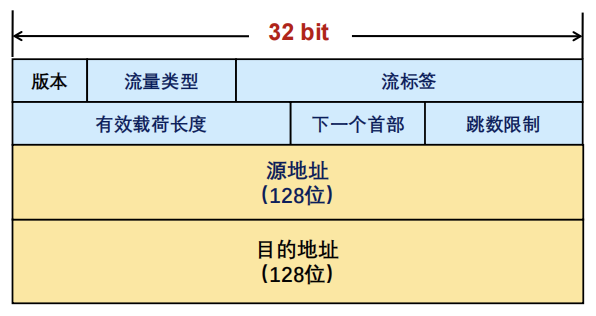
去除“首部长度”（首部长度固定为40字节）
去除“首部校验和”（传输层校验会涉及伪头部信息），提升转发速度
去除分片字段：“标识”“标志”“片偏移” ，移至扩展头（分段头）
IPv6分片机制：IPv6分组不能在传输途中分片，只在源端进行分片；IPv6支持Path MTU发现机制
IPv6扩展头：
- IPv6报文可承载多个扩展头；如有多个扩展头，需按规定顺序出现：
- 逐跳选项头：转发路径上每个节点都需检查
- 路由头：指明转发途中需经过哪些节点
- 分段头：包含分片处理信息：片偏移、 “更多段”标志、标识符
- 目的地选项头：目的端系统需要确认的信息
- 每个扩展头都包含“下一个首部”字段
IPv6地址分类
- 未指定地址（::/128），不能分配给任何节点
- 回环地址（::1/128），表示节点自己，不分配，类似IPv4中的127.0.0.1
- 组播地址（FF00::/8）
- 链路本地地址（FE80::/10），也称为Link-local地址，仅在本地链路上使用，网络设备根据接口MAC地址自动生成
- 全局单播地址，其它地址
IPv6地址配置方式：手动配置、DHCPv6（IPv6动态主机配置协议）、无状态地址自动配置
IPv4到IPv6迁移及过渡技术：双栈技术、隧道技术、翻译技术
隧道技术：两个同构网络的系统跨越中间异构网络进行通信。
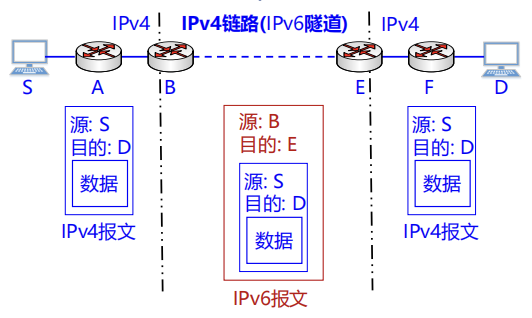